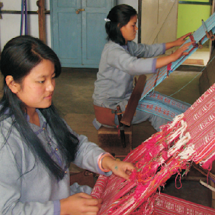
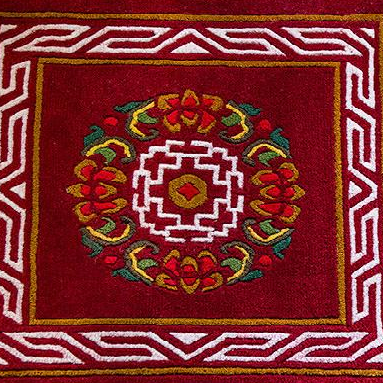
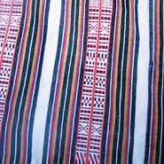
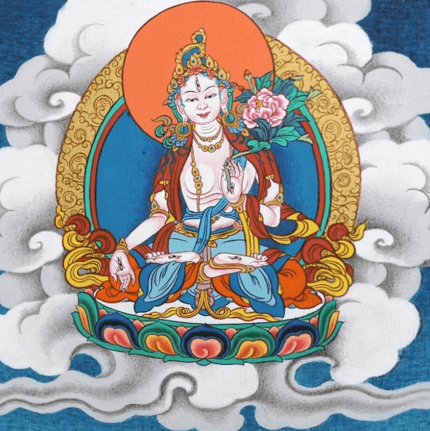
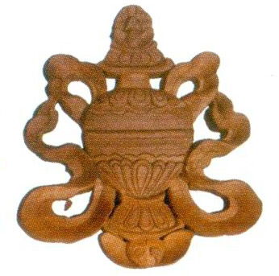
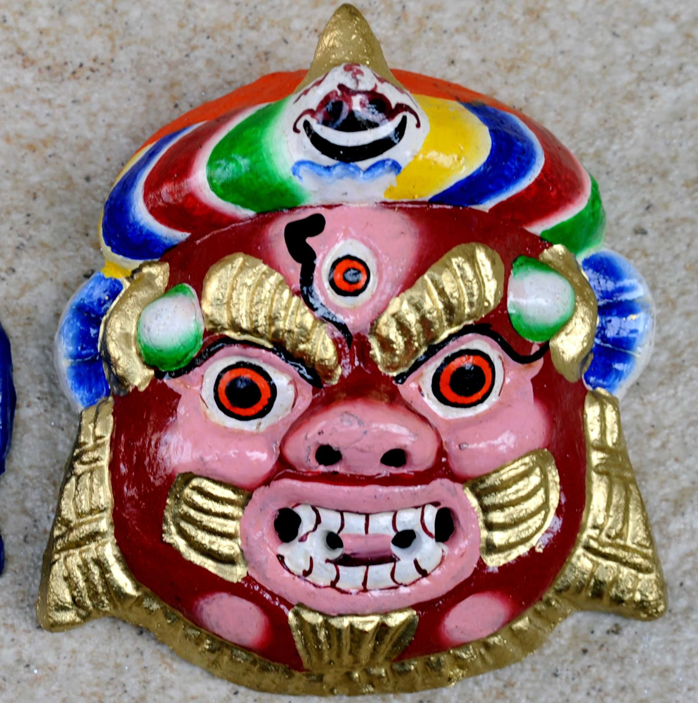

Sikkim is a state in northeastern India. It borders the Tibet Autonomous Region of China in the north and northeast, Bhutan in the east, Nepal in the west, and West Bengal in the south. Sikkim is also close to India's Siliguri Corridor near Bangladesh. Sikkim is the least populous and second smallest among the Indian states. A part of the Eastern Himalaya, Sikkim is notable for its biodiversity, including alpine and subtropical climates, as well as being a host to Kangchenjunga, the highest peak in India and third highest on Earth. Sikkim's capital and largest city is Gangtok. Almost 35% of the state is covered by the Khangchendzonga National Park – a UNESCO World Heritage Site.
About
Name- Swastik
Class- 10th-B
Roll no.- 22
School - Kendriya Vidyalaya Pitampura
About Sikkim

Handicraft of Sikkim
1. Handloom Weaving
The handloom tradition in Sikkim is very old and Lepchas women play a predominant role in handloom weaving, they begin to learn the art from a very young age and gain exceptional craftsmanship in weaving intricately colorful fabrics from cotton yarn. For weaving, first of all, the cotton yarn is sent for winding in wooden frames according to the specified length and breadth requirement. The wound cotton yarn is then fitted in the vertical frame loom and weaving begins. The handloom products range from plain to intricate patterns. The mostly used colures arewhite, red, black, yellow and green. From the woven fabric variety of items, such as Lepcha traditional dresses, shoulder bags cushion cover, napkins and table mats, etc. are made.

2. Carpet Weaving
The carpet weaving is done by Bhutia women. For carpet weaving, first of all the taan is made from cotton yarn according to the sizes. Then the weaving process begins according to the design, which is drawn on graph paper. While the weaving process goes on wooden hammers called flag are used to beat the woven wool into place. After the weaving is over, leveling is done with a leveling scissor to make the carpet thinner. Finally, the scissoring is done and the carpets are ready. which are used for covering sofas, beds, walls, chairs, etc.

3. Blanket Weaving
The blanket weaving is done by Nepalese women. The blankets are normally woven with sheep wool. For weaving, first of all, raw wool is washed with soap to remove all dirt and is sun-dried: raw wool is brushed with carder brush for 2-3 days. The next process is spinning the yarn out of raw wool, which takes quite some time. A wooden instrument called. the phang is required to hold the yarn, which is done manually by hands. After the spinning process is over. the yarn is given colour. Chemical dyes or natural dyes like walnut bark, majito, shungey, etc. are used to produce different colour. Finally, in the weaving process, yarn of different shades is used and the taan or the main support for the weave is inserted to the iron steel reeds on the loom. The dyed woolen yarn is then ready to be woven into the blankets according to design.

4. Thanka Painting
The thankas are the religious scrolls found hung in monasteries and houses of Buddhists. These are basically life sketches of Lord Buddha, Goddess Doma (Tara), or Guru Padmasambhava. A thanka serves as an ostensible symbol of the deity worshipped by the devotee, and it provides focal points for meditation. The thankas are painted by religious artisans known as Lharips. For thanka painting, first of all a rough piece of cotton is stretched on a frame and it is made smooth by sizing it with a mixture of chalk and glue. After it is dried and polished, painting is drawn on this cloth. Stone colour, vegetable dyes and two primary colours such as red and yellow are used in plenty while making a thanka painting. These two primary colures show the difference between fire and life, between material and immaterial. The orange symbolizes knowledge of the highest form of spirituality, the blue colour suggests depth, purity and infinity, while green represent the vegetable aspects.

5. Wood Carving
Wood carving is an ancient art form of both the Lepchas and the Bhutias of Sikkim. The main raw material used in this craft is wood. The wood of Cedrela toona Roxb. (tooni). Juglans regia Linn. (okhar), and Michelia champaca Linn. (chap) are normally used for wood carving. For wood carving, a piece of wood is cut into the desired shape at first After seasoning process, very fine chisels and tools are used to curve out the designs. The carved pieces are then assembled together and get ready for a coat or paint. Chokse (folding table), bagschok (centre table), table lamp sofa seats, screen partition etc. are major wood carved products of Sikkim.

6. Wooden Mask Making
Mask making is another ancient craft in Sikkim! Wooden masks may depict serene, partly angry or anomaly expression. The masks are carved out of the tough light wood of Abies spectabilis (D.Don) Mirb. Prior to carving, the wood has to be seasoned. The wood piece is cut horizontally according to the size of the masks to be made. Thereafter, curved knife is used to bring to shape the concave and convex portions. The surface of the mask is smoothened by using sand paper, synthetic painting is follows thereafter. Lucky sign are also made out of wood.
